堆肥
施肥
堆肥桶可以用來製作堆肥。手持堆肥對準耕地或農作物按右鍵就能使用。出現粒子效果就說明生效了。

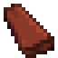
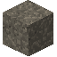

堆肥桶是製造堆肥的基礎工具, 它需要綠色和棕色物品. 有些物品會比其他物品貢獻更多的堆肥. 要向堆肥桶中加入物品, 按右鍵.
物品: #tfc:compost_greens_low
有一類綠色物品對堆肥桶貢獻較小, 例如草和類似的植物. 要滿足堆肥桶對綠色物品的需求, 你需要16個這類物品.
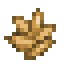
Compost Greens
有一類綠色物品對堆肥桶貢獻中等, 例如穀物. 要滿足堆肥桶對綠色物品的需求, 你需要8個這類物品.
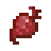
Rich Compost Greens
有一類綠色物品對堆肥桶貢獻很大, 例如水果和蔬菜. 要滿足堆肥桶對綠色物品的需求, 你需要4個這類物品.
Poor Compost Browns
有一類棕色物品對堆肥桶貢獻較小, 例如干蘆葦, 蕨類, 藤蔓, 以及落葉. 要滿足堆肥桶對棕色物品的需求, 你需要16個這類物品.
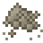
Compost Browns
有一類棕色物品對堆肥桶貢獻中等, 例如草木灰和黃麻. 要滿足堆肥桶對棕色物品的需求, 你需要8個這類物品.
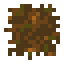
Rich Compost Browns
有一類棕色物品對堆肥桶貢獻很大, 例如西瓜, 南瓜, 枯萎的灌木, 松果, 以及浮木. 要滿足堆肥桶對棕色物品的需求, 你需要4個這類物品.
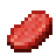
Compost Poisons
有些物品會汙染你的堆肥桶。比如肉和骨頭。用腐爛的堆肥施肥會立刻使農作物死亡。
堆肥桶在特定情形下更有效率: 如果堆肥桶頂上有一個雪方塊, 它會稍微更有效率. 在降雨量小於150mm或大於350mm的地區, 堆肥桶的工作會顯著變慢. 同時, 如果堆肥桶緊鄰著其他堆肥桶, 它也會工作變慢.
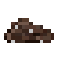
堆肥
堆肥是堆肥桶的產物。
- 氮：40
- 磷：20
- 鉀：40
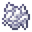
骨粉
骨粉是由骨頭製成的。
- 磷：10
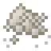
硝石粉
硝石粉是由它的礦石製成的。
- 氮：10
- 鉀：40
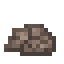
鳥糞石
鳥糞石存在於地下深處和礫石海岸。
- 氮：80
- 磷：50
- 鉀：10
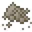
草木灰
挖掉篝火可以獲得草木灰。
- 磷：10
- 鉀：30
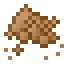
鉀石鹽粉
鉀鹽是由它的礦石製成的.
- 鉀: 50